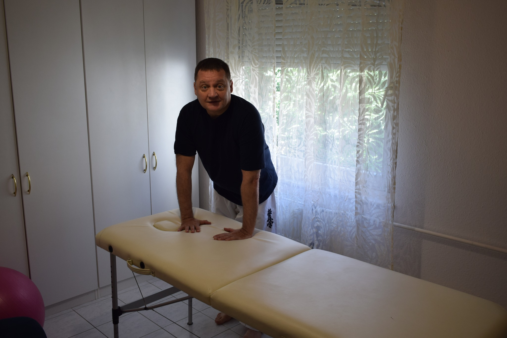
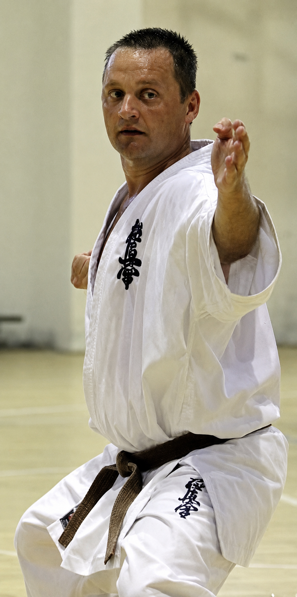

Regenerálódj vasárnap,
indulj könnyebben
a következő hétnek.
Masszázs és mozgásalapú regeneráció keleti és nyugati technikák ötvözésével, Budapesten az Aldea Stúdióban. Jenei Zsolt kezelésein.

Vasárnapi masszázs
„Ha végig dolgoztad, mozogtad a hetet,
akkor vasárnap lazulj le, regenerálódj!
Készülj fel a következő feladatokra!"
Vasárnap masszázs Budapesten – az Aldea Stúdióban, Jenei Zsolt kezelésein.
Válassz a masszázsok közül, és foglalj időpontot most.

Három évtized tapasztalat,
egy szenvedély
Három évtizedes küzdősport tapasztalattal kezdtem el masszázst tanulni és masszírozni. Számomra ez a két dolog összetartozik, mert ugyanarra a tudásra épül – a test megismerésére, a mozgás és a regeneráció törvényszerűségeire.
A keleti és a nyugati masszázstechnikák együttes alkalmazását tartom a modern masszázs nagy értékének. Minden kezelésemben megjelenik a Tui Na, a Shiatsu és a Thai technika is.
Tudj meg többet rólamMiért válasszon
Lusta Sárkány masszázst?
30 év küzdősport
Három évtizedes küzdősport háttér adja azt a testismeretet, amelyre a masszázs épül. Tudja, hol feszül, hol fárad az izom.
Keleti + nyugati technikák
Tui Na, Shiatsu, Thai masszázs és svéd alapok együtt – a legjobb mindkét hagyományból, egy kezelésen belül.
Regeneráció és lazítás
Napokig tartó jó közérzet – a masszázs fokozza a keringést, lazítja az izmokat és nyugtatja az idegrendszert.
Személyes figyelem
Minden kezelés az Ön igényeire szabott. Nem szériamunka – valódi odafigyelés minden alkalommal.
Válasszon masszázst
Minden kezelés tartalmaz keleti és nyugati elemeket egyaránt.
Frissítő svédmasszázs
Regeneráló, közérzetjavító masszázs, amely napokig tartó jó közérzetet adhat. Fokozza a nyirok- és vérkeringést, lazítja az izmok feszültségét.
Relaxáló svédmasszázs
Pihentető, ellazító masszázs, amely segít lelassulni és feltöltődni. Lassabb, lágyabb mozdulatokra épül, fokozott figyelemmel a meridián hálózatra.
Sport lazító masszázs
Erőteljesebb nyomásokkal, célzott izomlazítással. Az Ön által meghatározott izomcsoportokra fókuszálva, edzéstervhez igazítva.
Kobido – japán arcmasszázs
Arc, hajas fejbőr, nyak és dekoltázs kezelése. Természetes lifting hatás, kollagéntermelés stimulálása, a bőr feszessége és ragyogása.
Hogyan működik a foglalás?
Négy lépés – és az Ön vasárnapi masszázsa lefoglalva.
Válasszon szolgáltatást
Böngéssze a masszázstípusokat, és válassza ki az Önnek megfelelőt.
Válasszon időpontot
Kattintson a naptárban egy szabad napra – vasárnap kiemelt.
Adja meg adatait
Töltse ki nevét, e-mail-jét és telefonszámát – pár perc az egész.
Visszaigazolást kap
E-mailben visszaigazoljuk az időpontot, és emlékeztetőt küldünk.
Foglalj időpontot vasárnapi masszázsra
Ne halassza tovább a regenerációt. Válasszon szabad vasárnapi időpontot, és induljon könnyebben a következő hétnek.